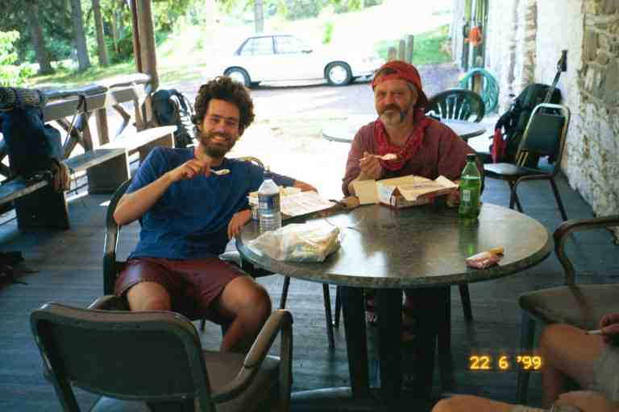
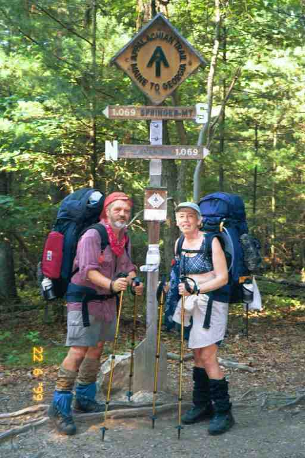
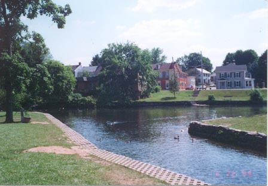

Jo Post drove us back to Harper's Ferry on June 18, and we got our packs on our backs a little after 3 PM. It was a hot day, much like the days before we left the trail, but contrasting with the three days that we were off.
We start by crossing a footbridge across the Potomac river to Maryland and then proceed along the C&O Towpath for 2.8 miles. The historic Towpath is a completely flat path situated between an abandoned canal to our left and the river to our right. It was used by mules to tow barges upstream on the canal. We saw a number of people strolling and biking along this wide path and near the end we saw a few vehicles that had to use it for access to homes situated next to the river. There was some shade here but it was very hot and the path was very hard on the feet, feeling much like walking on pavement. There were very few blazes as the National Park Service feels they deface the historic landscape.
We were getting tired and were sluggish because of the heat and our three days off. It was difficult to feel motivated when all our friends had gone ahead and the terrain did not have the feel of the Appalachian Trail. We finally came to the blazes leading us away from the canal. We crossed under a four lane highway and started climbing, going up 1000 feet in less than a mile and a half. The trail continued along the top of the hill in virtually a straight line with very little elevation changes. The trail was in protected woods on the top of the mountain but the map shows it is in a narrow corridor and that civilization is just below the hill on both sides.
At the 10 mile mark we dropped slightly into Crampton Gap and entered Gathland State Park. At the park entrance, there was a cemetery and we saw a mausoleum and a memorial to civil war correspondents. The rocky hills over which we would hike for the next few days were the scenes of many civil war battles. In the park, the trail goes by a washroom with running water and pop and juice vending machines. We stopped at a table next to the building and decided to cook and obtain water as we heard there is little water at the shelter 0.5 miles beyond.
We noticed a large group of people at the covered picnic pavilion across the road. A few of them stopped to chat on the way to the washroom. One lady said it was a wedding reception and told us to put away our stove and she went away and came back with plates of fried chicken and salad. We had a talk with a hiker who had been on the trail a couple of days but was getting off because of blisters. She was depressed because of the rain over the past two days. On the way out of the park, we walked past the wedding party and received offers of beer but we declined because it was getting late and we wanted to get to the shelter before dark. We climbed the 0.5 miles to get to the side trail to Crampton Gap shelter and then went 0.3 miles on the side trail down into a gully to the shelter, passing a group of weekenders who had set up their tents in a flat area right on the trail. They were lounging around with a radio playing.
At the shelter we met two young men who made supper in the small gazebo in front of the shelter. They would leave to tent back up the trail. CABOOSE and PALE RIDER arrived to say hello but they also were staying up above. We had met CABOOSE some time before and I had played scrabble with him and his friend CHICKEN at Apple House shelter. CHICKEN had left the trail in Harper's Ferry saying he was satisfied with his accomplishment. There had been a big goodbye party at the KOA campground outside of Harper's Ferry. This was our first meeting with PALE RIDER who was part of the group that had been hiking with CABOOSE the last while. What I recall most about this shelter was the wooden walkway leading from the shelter to the privy which was attached to the walkway. We assessed our day and were pleased with the 10.5 miles after the late start.
The next day we were on our way just after 6:30 AM. It was more of the same hot, humid weather along a rocky trail in a young forest on top of a mountain. After 5 miles we walked the 0.2 miles into Rocky Run shelter where we took a break and found an entry in the register from SMOKEY JOE saying: "MA and PA where are you? I feel like an orphan." It made us smile but also made us feel sad.
The trail dropped down to Turner's Gap and on the way down I had a scary encounter. As I came around some bushes on the rocky descent I almost bumped into a large dog coming up the trail. It scared the heck out of me, mostly out of surprise. A young smiling couple came right behind it but I was in no mood to smile back. The dog was not on a leash and was very well behaved, but meeting him head on without seeing the owners was quite unnerving. I have seen many discussions on internet about the behaviour and appropriateness of dogs on the trail but will not get into that here, as I am ambivalent on the subject, having met good and bad dogs on the trail.
We found ourselves behind a group of adults and young children out for a nature stroll, walking single file along the narrow trail. We managed to pass them slowly on the narrow path and they seemed amazed that these two old hikers with large packs were faster than them. We then came to Dalhgren backpacker camping area. It is free and has running water, electricity and hot showers. We could see the campground through the trees to our left and there seemed to be lots of people, likely because it was situated only 0.2 miles from US Alt 40 and it was Saturday. In any event we had no need to go there. We came to US Alt 40 but were too early to eat at the inn right next to the trail which only opened at lunch time.
We crossed the highway, went back up into the woods and found the trail covered with long cut grass and small branches. We soon came upon a person maintaining the trail with a whipper snipper. Later on we arrived at Washington Monument State Park where we stopped at the edge of the campground and had a snack before heading up the trail to the point where the trail took the tourist trail heading for the Monument. Neither of us recalls seeing the Monument which is described by JILEBI as a giant squat milk bottle. Later on we crossed the footbridge over I70 where we realized again we were hiking in a narrow strip of woods, as we skirted around backyards. We then immediately crossed US40 where CABOOSE had said there was a tavern and restaurant which was also mentioned in the Companion, but there had been a trail relocation and we did not see it.
As we climbed the rise back into the woods we saw TOEJAM and HAIRY STRAWBERRY talking to some day hikers. They did not see us approaching and I surprised them by calling out to their dog ZEUS. We talked a little and found out that they were little upset about a stray dog that followed them and had gone down on the highway and been struck by a car. We left them and went a half mile further where we took the side trail to Pine Knob shelter for a break and water. The shelter was in a beautiful clearing but I do not know why anyone would want to stay here so close to the highway. We could hear the sound of traffic as we sat and relaxed talking to some section hikers. Some entries in the register mentioned the noise of the rain on the tin roof during a recent storm.
We climbed up the rocky trail to Pine Knob and then walked the mostly flat terrain on a wide rocky trail that could have been a cart road at some time. At Annapolis Rock look off we began seeing a few day hikers who were coming from the other direction to see the look offs. There was apparently a parking area a mile off the trail, about a mile and a half ahead. We also met a father and son looking for a place to camp. We continued on to Black Rock cliffs look off where we encountered a large church group.
At this point, the trail turned and started down a rocky incline. We walked faster than most of the group and passed them on the way down. One young man with his four young girls, maybe aged 3 to 8, began to walk with us and started asking all kinds of questions about us and our trip. His kids had problems keeping up and the youngest kept tripping and falling. He would turn around to tell them to hurry but did not stop and help. He was intent on keeping up with us and asking questions. I would glance back and see the girls out of breath, trying to run to keep up on the rock strewn path. He finally asked us the question that we will never forget. He wanted to know how we managed for sex on the trail. We laughed and did not answer, but he insisted. I always wondered if he was perhaps interested in doing the trail in the future, but was worried that he would not have all the comforts of home.
We finally arrived at a spot called Pogo campsite where the trail to the parking lot split off. We all stopped and rested against a stone wall, built with rocks from the trail I believe. I was not sure whether I wanted to stop here as it was only 4:30PM, and there was a shelter only 4 miles away. My concern with stopping here was that we were right at the junction of the trail to the parking lot and the terrain was very rocky. MA's choice seemed to be to stop here for the night. I found it very ironic that the young man brought to my attention the fact that MA seemed tired.
The young man finally left and I scouted around below the trail for a level spot with few rocks but without success. We then climbed the rocky hill above the trail and found a flat location that was a little beyond the side trail and could not be well seen from below. Many day hikers were now returning down below but nobody arrived to camp with us. I obtained water from a beautiful spring about 200 yards down the side trail. The crystal clear cold water poured out of the hill next to the trail, formed a pool and then overflowed over large flat rocks on the trail. I filtered water while a couple with two young children obtained water. A Ridge runner appeared and chatted with us for a while.
The next day was more rocky terrain with a number of road crossings and powerlines. My feet were really starting to bother me. They had obviously widened and lengthened and my toes were always banging against the end of my boots. The toes were callused and sore and I finally had found that there were tiny blisters on the end of a few of them. A couple of the toes were rubbing against each other so I wrapped then in duct tape most days. I was still using the medicated Vaseline to try and protect my feet. I now also had a new foot problem. For the last few weeks my heels had been painful. I had started to adjust my walking to avoid the pain that I often felt when my heels hit the ground. Now there was a sharp pain in my arch when I walked, especially on the right foot. As a result, MA was often walking in front of me.
Around 9:30 we came down to MD17 where we noticed a van parked off the road next to the trail. There were a number of people standing around eating snacks and things from coolers at the back of the van. It seemed to be some kind of hiker support vehicle. They ignored us and we crossed the road and began climbing a dirt road, where we met a thru hiker whom we had not met before, coming the other way. He said he was doing the four state challenge. The challenge consists in starting at Pen Mar Park at the PA-MD border and trying to walk the 43 miles to the WV-VA border just beyond Harper's Ferry. A little later we met MAGNOLIA who was also doing the challenge. She did not seem too confident as her knees were already bothering her. She told us later that she did not make it all the way.
In the middle of the afternoon we went up Quirauk mountain and descended down a steep rock scramble. We would soon be leaving Maryland and we were perhaps getting a taste of the Pennsylvania rocks which we had heard so much about and were dreading. The trail then widened and then joined an abandoned road as it slowly descended through the woods. We then heard a voice in the distance over a loud speaker and the sounds of many voices coming from Pen Mar Park in Cascades MD. The park gets its name from the fact it is near the Pennsylvania/Maryland border.
The trail entered the park alongside a large pavilion. There were hundreds of people in the pavilion, many sitting on seats along the railing above us. A few people asked us question as we went by. The pavilion was open on 3 sides. Nestled in a corner on the closed side was a large dance band in black ties and jackets playing a big band number from the 40's. The mostly senior crowd was dancing up a storm.
There were also a number of large covered picnic shelters throughout the park which seemed to be used by family gatherings. There were other people at other picnic tables using the park's barbeques. This would likely be prime yogiing (i.e. like Yogi Bear) territory but we received no offers and had not mastered the technique. We went to a large observation kiosque which overlooked a valley and we sat on a park bench and removed our boots. I walked over to a snack bar and obtained hamburgers and fries. We listened to the music as we ate. It was mostly big band music and sounded so authentic. There was a female vocalist who sang a number of songs. We put on our jackets as there was a wind coming right up from the valley. We were likely cool from our wet clothes.
I noticed TOEJAM and STRAWBERRY eating with a family group in one of the picnic shelters. They were likely two of the best yogiers on the trail. I recall TOEJAM telling us about some tourists who were making a fuss about their dog ZEUS and who asked if he would like a hot dog. She replied that she did not know about ZEUS but that she would like one.
I went over and talked to them and they said that camping was not allowed in and around the park but that they intended to stealth camp in the bushes later on. They were wary of the custodian who was hanging around, as there was a large fine for camping. Apparently hikers had been allowed to sleep in the pavilions up to a few years ago. The Companion indicated that there was camping allowed in a field in town across from the park. There was an empty field across the street in a residential area but it did not seem a good option, even if we could set up our tents, as there would be no washroom facilities.
I obtained a couple of plastic spoons from the group with TOEJAM. They were to replace one of our two Lexan spoons which we had lost, likely at Gathland State Park two days before. It was lucky I got more than one because one of them melted when i poured hot water over it in my cup to make soup a day or two later.
We then packed up and left down a grassy trail and soon came to a sign informing us that we were crossing the Mason Dixon Line. We were entering our 7th state. We crossed a few roads and then followed the trail as it went through a wooded area not far from homes. At the first road there was a large post with a horizontal bar across the top on which was written "Appalachian Trail" in the middle and "N Maine" on one end and "Georgia S" on the other end. We would see these signs at major roads throughout all of Pennsylvania. I sometimes wondered if it was a good idea to have everyone in this heavily populated state know that we were here.
Around 6:30, we arrived tired at Deer Lick Shelters 4.8 miles after Pen Mar Park. The walk from the park had not been bad except for our fatigue. The last part of the trail was flat and had a wide grassy edge as it went through a young forest. It was later than we normally stopped but being mid June, we had plenty of time to settle in. There was a small boy scout troop here. The boys had taken over one of the two old shelters and we took the other. The leaders were tenting not far from the shelters. Two hikers were tenting in the woods not far from the shelter. We did not see all of the boy scouts because they had hung a blanket in front of the doorway to their shelter. We sat at the table between the shelters and had a light meal consisting of ramen noodles and crackers with pieces of summer sausage.
The sausage was a gift from SMOKEY JOE. He bought us the one pound sausage when we were at Walmart. His mother included a large sausage in all his mail drops and he said it was the way he insured he got protein. He added some to many of his meals and also ate some at breaks. He liked it because it would keep in the hot weather. We slept well that night after our 18.5 mile day.
The next day was uneventful. There was a steep climb (by Pennsylvania standards) of 1000 feet over a distance of 3 miles up to Chimney rocks. We also came across a few rock strewn areas. In the middle of the afternoon we crossed US30 and entered Caledonia State Park. We had been looking forward to the park all day because there was a pool and a snack bar. We were initially walking along a 12 foot wide path under a tunnel of trees. I was surprised to see signs next to the trail on my left which advised people that there was no hunting beyond that point. I was flabbergasted, because of course that meant that hunting was permitted just next to this path which could be used by families on bicycles and with strollers, etc.
We soon came out into the open and saw a fenced-in pool across the clearing. We walked a little past the pool to some picnic tables in the trees and I went over to the snack bar adjacent to the pool to buy burgers. It had cooled off this afternoon and we decided not to swim. We relaxed for a little while, used the facilities and read some posted brochures warning about lyme disease which could be picked up from deer ticks, which were prevalent in this area. We knew about these small ticks and were always on the lookout for them on our clothes and skin. There could be a danger if one burrowed under the skin and remained there about 48 hours. If found, they have to be removed by pulling them out backwards so that none of the tick remains. We had tweezers with our Swiss army knives, but did not use them. We know of a few hikers who contracted lyme disease which causes extreme fatigue among other things.
We went a further 2.6 miles on to Quarry Gap shelters, first walking through the camping area of the state park and then climbing up a relatively easy hill. The shelters are very interesting, consisting of two square shelters, each with a large opening, with a porch and picnic table between them. The whole thing is covered by a roof with a number of sky lights. The water source is a stream running about 15 feet in front. There were a number of people here including CABOOSE and PALE RIDER, who camped in the bushes not far from the shelter.
The next day was easy walking with a large number of road crossings and areas with mountain laurel still in bloom. In the afternoon there was a long slow descent down to Pine Grove Furnace state park, including some walking in a cottage area. We walked along a road through the state park and finally went past the Ironmasters Mansion Youth Hostel on a hill above the road. Next to the hostel was the Pine Grove General Store, home of the traditional "Half Gallon Club". To belong, thru hikers have to eat a half-gallon of ice cream to mark the halfway point of the hike.
There were a number of hikers here sitting around tables under the covered porch in front of the store. We are unsure of the identity of most hikers here, but we recall RAMBLER and perhaps LAST EXIT. MA ordered a hamburger and fries and we read the trail register in which many of the hikers spoke of their success or failure at joining the club. Someone recommended against taking the teaberry flavor which tasted like Pepto Bismol. I thought it might be a good choice considering the effect it might have. I decided to try to join the club. I chose a half gallon of Hershey's pecan ice cream and sat outside in the shade to make my attempt. CABOOSE joined me in the attempt but after a couple of spoonfuls said it was the stupidest thing he had ever done and shared the rest with PALE RIDER. A picture of CABOOSE and PA is attached .

When I got near the end of the box, I paused for about 5 minutes before finishing. I was starting to feel chilled as my body temperature had dropped. It might have been better to try in the sun. In any event I joined the club, and I became entitled to a cheap wooden ice cream spoon with an inscription stamped on it. It was the least the store could do, after charging $4.99 for the ice cream. The immediate reaction was to have lots of liquid go right through me, but I was bursting with energy from the consumption of 2400 calories.
We decided not to stay at the hostel and put our packs back on headed we knew not where as there were no shelters in the immediate vicinity. We thought we would put up our tent in the woods near the trail on the mountain coming up, as we did not want to pay to camp in the park. We continued our walk along the roads and sidewalks of the park, passing by a beach and coming upon a tiny baby bunny sitting in the middle of the sidewalk. A little beyond the park, we came to a wooden sign marking the midpoint of the trail. The sign is not very accurate as the trail changes every year, but it has remained here since the mid 80's when it was erected by a 1985 thru-hiker. Attached is our picture taken by RAMBLER.

We climbed up the wide cart trail following RAMBLER, watching him disappear from view, but with the intention of camping with him somewhere ahead. We met a number of day hikers on the way and crossed a few side trails. The trail then headed into the woods along a narrow path through a young open forest. We came upon RAMBLER and a section hiker setting up in a flat area next to the trail. I put up a cord to hang our wet stuff and then suspended our food bags from a nearby tree. The other two built a fire but MA and I turned in and went to sleep listening to their quiet conversation. It was a 20 mile day.
The contour map shows the next day to have a few ups and downs, but this being Pennsylvania, they were rarely more than a few hundred feet. Any that were higher were generally over a long distance. Not long after starting, we began a 800 foot descent over a distance of 4 miles, crossing a few roads and then following an old railway bed for awhile before coming to PA34 at the 6 mile mark. We walked 0.2 miles up the highway to the Green Mountain Store mentioned in the Companion. The traffic was light but some large trucks came barrelling by once in a while as we trudged along the hot road. It seemed further than advertised.
The store had a selection of groceries and a deli meat counter. Inside, we were greeted by a dog from the owner's quarters behind the counter. This was our first encounter with a deli on the trail. We were quite surprised at the number of stores that had deli counters in small towns throughout PA, NJ and NY. After a long look at the sandwich and sub list and all the meats in the counter, we ordered subs with an assortment of hams whose names I could not pronounce and cannot remember. The subs were great and inexpensive, overflowing with so much meat and veggies that it could not be closed. We sat and enjoyed them on a picnic table out front. We then hurried back down the road to the trail as there were no toilets here.
We returned to the woods where we followed and then crossed a dry stream bed and climbed up a short steep incline, working our way over boulders. We came to a few more roads as we strolled up and down hills through young forests. At the 11 mile mark we came to Whiskey Spring road where we found a mother and daughter filtering water. They were WHISTLER and WHISTLER'S MOM. The young girl was 18 years old and had just graduated from high school. They had just got on the trail and were heading north with the intention of flipping and going south when they got to Katahdin. I got the idea that the hike was the mother's idea and that her daughter was just along for the ride. Perhaps she was simply tired because of the heat and the pains of a new hiker. They knew who we were because someone had asked them if they were MA and PA, likely having seen my entries in registers.
We continued on over another hill and through the woods, crossing a stream and going a short distance off the trail to Alec Kennedy shelter for a break, where we were soon joined by WHISTLER'S MOM, WHISTLER and another hiker. We shared some cookies and were on our way. We came upon a six boys in their middle teens in army uniforms, carrying heavy packs. Three of them were having a tough time and the sergeant with them, a man in his late twenties, was trying to get them to move faster. It seems they were cadets (or something similar) out for a few days and were behind their planned schedule.
We came out of the woods with three of them and found ourselves walking through flat fields of wheat stretching out in the distance. We were exposed and it was very hot. It would be 1.5 miles of these fields to Boiling Springs and then another 13.5 miles of them after the town. It's now time for a quote from SINGLEMALT who came through here early in the morning a week later.
***********
SINGLEMALT's Journal (http://users.erols.com/johndsc)
"I got an early start and headed out towards Boiling Springs. Four miles after leaving camp I started a descent down the last slope of the Blue Ridge Mountains, which would end in the Cumberland Valley of Pennsylvania. The change was abrupt; I was standing in a forest of oak, hickory, and popular. I took two steps and found myself in a seemingly endless field of wheat.
Since the start of my journey I have been in the Blue Ridge, and in two steps they have ended and been replace by a 15 mile stretch of level farmland. The smells have changed from that of dark humus, pine, and woodland flowers to that of freshly tilled earth, cut hay, and fertilizer. The contrast is shocking, but not at all unpleasant.
As I hike across these vast fields I glanced back to that last hill. I have cursed those mountains many times in the last three months, but find myself missing them already. In the mountains, as in life, we often measure progress not so much by what we have gained, but by what we have left behind.
I came into the town of Boiling Springs around 10:00 this morning. What a neat little town. The ATC regional headquarters is here, but the really impressive thing is the spring. It's one of the largest springs in Pennsylvania, and only appears to be boiling as it bubbles up out of the ground at a rate of 22 million gallons per day! That's right, 22 million gallons a day. This spring feeds a crystal clear shallow lake, which takes, up the entire center of the town."
*********************
MA and I walked slowly through the hot fields, crossing a road and coming to a wooded oasis where the trail made a 90 degree turn away from it, and then soon another sharp turn leading along the western edge of the field to trees at the north end. Near the Northwest corner, there was an opening through the trees to our left leading to town and a sign for camping pointing to the east. It was very unclear where we would be camping in this big field, but that was a problem for later, as we went to the road, walked over the railroad tracks and crossed a small stone bridge and arrived in town. Way off to our left we could see the large town pool complex.
The trail went into a small wooded area and then over a foot bridge over a stream where many people were fishing. We entered a grassy park that bordered the town lake (attached picture from CELT'S journal at trailjournals.com) and walked along the sidewalk next to the lake where we came upon more fishermen and families strolling with small children. The regional ATC center was closed so we asked someone about a good place to eat, and they suggested the tavern across the street. It seemed like a good idea as beer and lots of cheap food sounded great. We went into the air conditioned lobby, sweaty bodies, sweat drenched clothes and smelly packs. I took off my pack and went up the stairs to ask if it would be OK to come in like this. The two fancy dressed ladies said it would be no problem. I asked to see the menu and was floored. Nothing cost less than $15. Not like the taverns back home. They suggested an Italian restaurant around the corner and we left.

The Italian restaurant was not as fancy or expensive and we ordered a large Sicilian Pizza with the works (at least I think that is what it is called) and a pitcher of pop, as we sat in a corner away from most customers. An enormous square pizza arrived, cut into 9 square pieces each of which had a high mound of toppings in the center. Not like any pizza we had ever seen but it was delicious. I had 3 and a half pieces and MA had 2 and a half and we brought the other 3 pieces out with us. We headed back to the park, stopping first at a fishing outfitter's shop, where we stood outside and talked to the army sergeant who told us where his boys were camped. He had left them there to fend for themselves. I told him I would bring the pizza back for the boys to split up. Then LAST EXIT, CABOOSE and PALE RIDER appeared and we continued to talk. When they heard about the great pizza and saw the box, all three pieces disappeared as did my good intentions. Such is Trail Magic I guess. I went into the outfitter and tried on a pair of gaiters to replace mine but they would not fit over my boots. I really loved his basset hound that just lounged around the shop.
On the way back, we crossed the foot bridge and MA commented to me in French about the large fish in the stream. Actually I did not notice she spoke French as we are so used to switching back and forth, but a couple on the bridge from Aylmer Quebec certainly noticed and we had a nice conversation.
When we got back to the field, we followed the directions received from the sergeant and headed along a long a dirt path to the north east corner where we found a small field almost completely surrounded by a hedges and bushes, with a porta potty in the corner. This is the area set aside by the ATC for camping. We spent time talking to the young boys who were setting up little two man military pup tents. They gave us portions of their rations (MRE's) that they did not like, mostly the fruit cocktail as I recall. The sergeant came back and seemed frustrated at their tent raising abilities. The other three thru-hikers arrived and set up for the night. I admired CABOOSE'S light one man tent and LAST EXIT's ability at setting up his tarp. He shared some of his trail mix with me. His was the healthiest gorp I had seen and did not include any sweets. There were lots of nuts, grains, cereal and dried fruit. He said that it was very nutritious and he did not have to worry about not having enough meals as the gorp would sustain him.
While we were getting ready for the night, we did not take much notice of the train tracks about 20 feet from us on the other side of a wire fence and behind some trees. It happens that that section of track is about half a mile from the road crossing, which is the distance at which a train begins to give warning blasts. We found that out at about 10 pm when the first train went by and at midnight and at least once more during the night.
*********************
Why were we camping in this strange spot? The following is the short version of the story of this section of trail.
On its way north, the AT has to come out of the mountains and cross Cumberland Valley and then go up in the mountains again. The trek across the valley used to involve a 16 mile roadwalk. A land acquisition program took the trail off the roads and put it in the farms fields. The cost to acquire more than 90 properties was about $6.6 million. As part of the negotiations and agreements that moved the trail off the road, camping is no longer allowed on the lawn of the ATC center.
We can say from experience that the 15 miles through the farm lands is really hot, but it must have been worse walking on the roads in the past. Another problem that still exists through the valley is a shortage of water. The Companion lists only two sources for water on the 14 mile stretch from Boiling Springs to Darlington Shelter in the mountains, one of which is the restaurants on US11.
Unfortunately there are very little accommodations in the town: no motels and one B&B. PADDLER tells of taking a taxi to the next town with PILGRIM to obtain a room to watch the NHL final game.
**************************
The next episode includes the infamous story of Elmer at the Doyle hotel in Duncannon Pa, and the famous Pennsylvania rocks, and WOODPACKER lost in the woods at night.